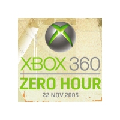

Xbox 360: Zero Hour
Gamers From Around the World to Converge at Massive Xbox 360 Launch Event in Mojave Desert
By CESPage.com Xbox, Published 8th November 2005
3,000 Lucky Gamers Invited to "Xbox 360: Zero Hour" Launch Event; Best Buy Offers Gamers Chance to Buy Xbox 360 Onsite
Microsoft announced on November 7th details of the Xbox 360 launch event, "Xbox 360: Zero Hour," where thousands of gamers from around the world are invited to make the pilgrimage to an undisclosed location in the Mojave Desert to witness the dawning of the next generation of gaming. Microsoft's massive launch event will feature hundreds of gaming stations, live entertainment and around-the-clock gaming at a venue immersed in the Xbox 360 experience. The event will begin on November 20th when the sun sets on the desert horizon and end at 12:01 a.m. on Tuesday, November 22, the official launch date for Xbox 360 in North America.
In order to win credentials and attend this exclusive event, gamers must visit http://www.microsoft.com/xbox/zerohour.htm on November 10th to see a list of participating registration sites for a chance to win free tickets for themselves and a friend. Tickets are limited and distributed on a first come, first served basis. Hopeful attendees should check participating sites frequently since sign-up forms will be posted at unspecified times throughout the day. After registration ends, the 3,000 lucky winners will join VIPs from the U.S. "Hex 168" and European "Origen" campaigns to be the first gamers in the world to fully experience all that Xbox 360 has to offer.
"Xbox 360: Zero Hour" is expected to be a true gaming paradise with hundreds of Xbox 360 gaming stations featuring high-definition monitors and digital sound available for attendees to get the chance to play the full Xbox 360 launch line-up along with other highly anticipated games that will ship this year and into 2006 from 2K Games, 2K Sports, Activision, Bethesda, Capcom, Electronic Arts, Microsoft Game Studios, Namco, Sega, Square-Enix, Tecmo, THQ, and Ubisoft." Among other gaming highlights, attendees will be the first ever to play a 32-player match of "Perfect Dark Zero" over Xbox Live, have access to the full Xbox Live Arcade lineup and witness demonstrations and sneak peeks of hotly-anticipated non-launch titles including live game play of "Gears of War."
Attendees need not worry about missing out on one of the thousands of national "midnight madness" events. Best Buy, retail partner of the Xbox 360 launch event, will be onsite where gamers can purchase their Xbox 360 consoles, games and peripherals.
"Our goal with the launch event is to reward the gamer by creating the ultimate Xbox 360 oasis," said Peter Moore, Microsoft corporate vice president, Worldwide Marketing and Publishing for Xbox, who will be celebrating at the event along with J Allard, Microsoft corporate vice president and chief XNA architect, and leading game developers and members of the Xbox team. "Gamers at 'Zero Hour' will have bragging rights to say 'I spent over 24 hours at the epicenter of the gaming universe, and I was among the first generation of the next generation of gaming.'"
In addition to gaming nirvana, attendees will be able to purchase food and beverages at around-the-clock refreshment stations while they enjoy live entertainment including a genuine "Kaiju Big Battel" (www.kaiju.com) and a musical performance by raucous rock band from Southern California, "Louis XIV." Attendees will also receive exclusive event give-aways such as "Zero Hour" Xbox 360 console faceplates.
Xbox 360 is the most powerful video game and entertainment system, delivering the best games, the next generation of the premier Xbox Live online gaming service, and unique digital entertainment experiences that revolve around you. The system will launch this holiday season in Europe, Japan and North America, to be followed by availability in Australia, Colombia, Hong Kong, Korea, Mexico, New Zealand, Singapore and Taiwan in 2006. More information can be found online at http://www.xbox.com/xbox360.